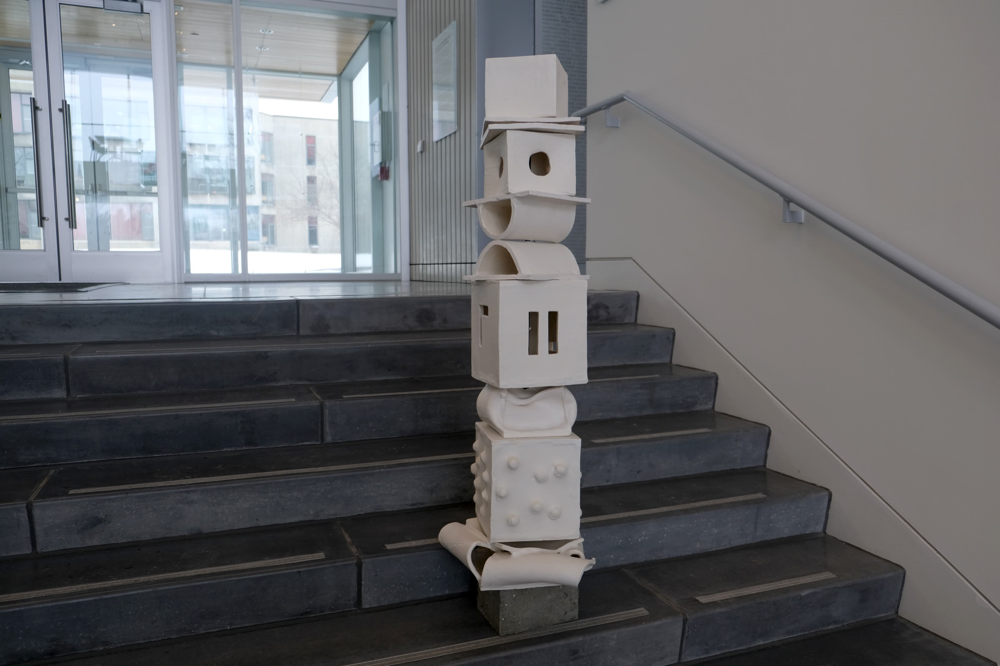

The white perforated piece is a totemic examination of jazz, an exploration of abstracting elements of music. The hierarchy is undeniable, starting with the rhythmic foot tap as the base, the clap, the snap, an evolution of the same bodily expression and involvement with the music, becoming louder and more active. The movement that ripples from the base allows the piano to evolve from the forms below, transitioning the piece from organic human forms to rigid mechanical forms, capitulated by the drums, leaving the room, through negative space, for the beauty of silence.
Perhaps the most ethereal element of a jazz ensemble is the trumpet, emphasized through its uniform indented holes and separated by a double layer of poetic transition into the transcendental voice, an element that, executed properly, can provide perfection in a jazz ensemble.
The pieces may have been intentional in their individual abstraction; however, they come together, unified by color and their manipulated absolute forms (cubes). There is a sense of the Platonic philosophy within the pieces, each element reaching for its absolute. It is merely an extension of some unattainable truth we have all touched but are unaware of.